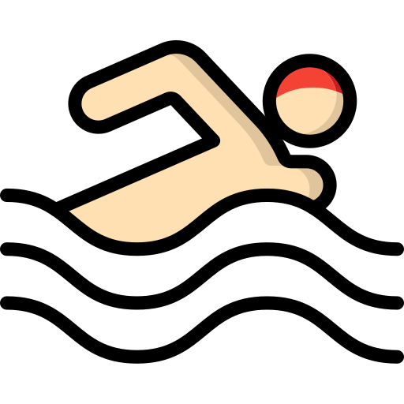
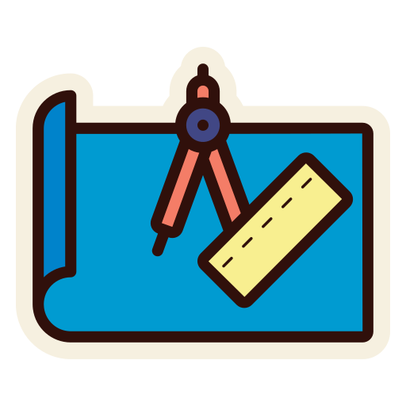
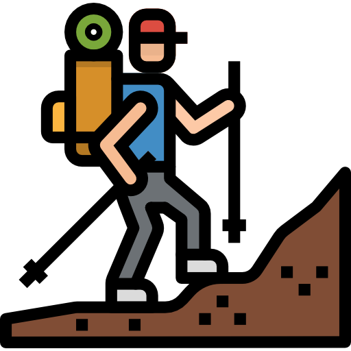
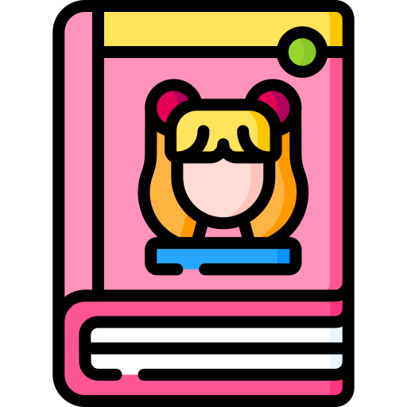

Sabrina Corrado
LAUREANDA IN SCIENZE FILOSOFICHE
SU DI ME
Salve a tutti! Sono Sabrina, ho 28 anni e vengo da Striano,
un
piccolo
paese in provincia di Napoli.
Da pochi mesi mi sono interessata allo studio dell'analisi dati e sto muovendo i miei
primi passi nel coding.
Sono all'ultimo anno di università e sto esplorando nuovi mondi per apprendere nuove
skills e competenze!
FORMAZIONE
-
Corso Front-End Developer con Digitazon - in corso
⇥ Html 5
⇥ Css 3
⇥ Bootstrap
⇥ Javascript
⇥ React
-
Corso professionale in Digital HR (248 ore) - Recruiting, Selection & Learning
⇥ Talent Acquisition, E-Recruiting, Time Management, Digital Learning, Project Management.
⇥ Simulazioni e case studies: creazione di Employer Branding, Job Description and Profile.
⇥ Simulazione colloqui di lavoro, strutturazione delle fasi di Recruiting.
⇥ Ideazione di programmi di formazione per aziende (micro e macro-progettazione, utilizzo Project Libre)
⇥ Analisi dei principali strumenti usati nei processi di Recruiting (Software ATS)
⇥ Gamification con Genially e Canva.
-
Corso Data Analysis con Opinno (250 ore)
⇥ Ottima conoscenza di Microsoft Excel (somma.più.se, cerca.vert, cerca.x, tabelle pivot e grafici)
⇥ Linguaggio VBA
⇥ Utilizzo di Power Query
⇥ Introduzione a Power BI e Python
-
Laurea magistrale in Scienze filosofiche - in corso
⇥ Completamento laurea in filosofia.
NEL TEMPO LIBERO...
Le mie passioni sono:
-  Nuoto
-  Disegno
- Lettura
-  Trekking
-  Manga e anime
- Cucinare
-
 Coding
Coding
LINGUE
- italiano - madrelingua
- english - B1
- deutsch - B1